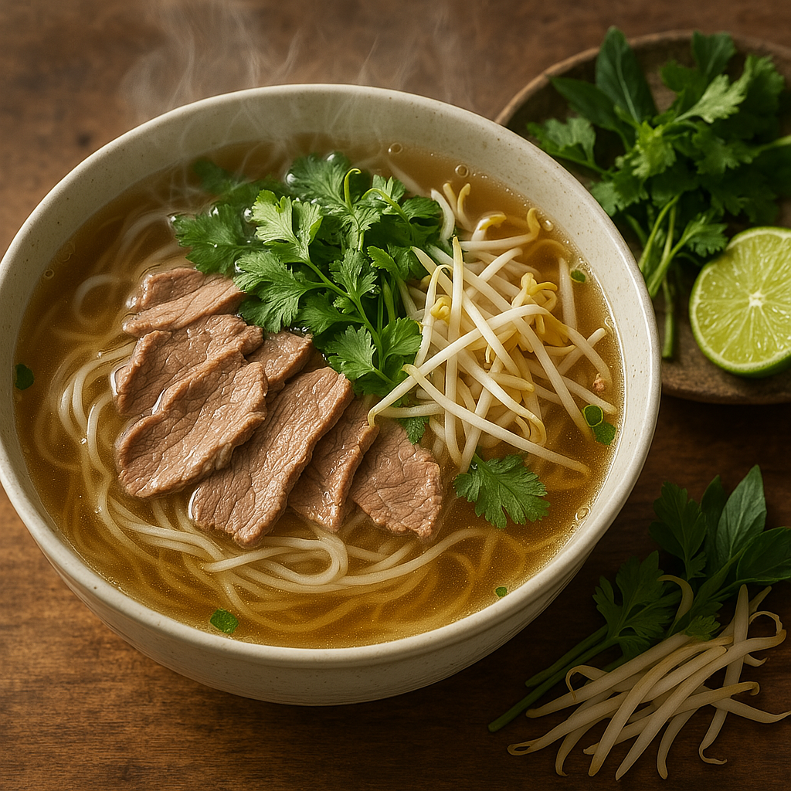

AHNS
홈
|
소개
|
소식
여행 이야기
베트남 여행의 모든 것
전체
맛집
여행 팁
숙소
교통
쇼핑
문화
관광지
하노이 올드 쿼터 골목 탐방기
2024.03.15
•
조회수 238
•
여행 팁
36거리의 매력적인 골목들과 현지 카페 추천
자세히 보기 →

현지인이 추천하는 하노이 쌀국수 맛집
2024.03.10
•
조회수 456
•
맛집
줄 서서 먹는 진짜 맛집 포(Pho) 베스트 5
자세히 보기 →
하롱베이 크루즈 선택 가이드
2024.03.05
•
조회수 867
•
여행 가이드
예산별 크루즈 추천과 현지 예약 팁
자세히 보기 →
1
2
3
...
10